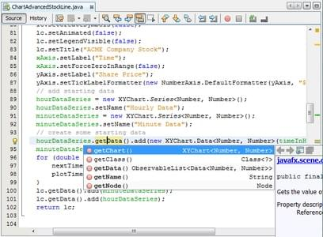

Importante Conozca sobre nuestra organizacion haciendo click en cada uno de los items del menu. Para mas informacion comuniquese con nosotros a traves de correo electronico o en la seccion de contacto en nuestra pagina web y le responderemos lo mas breve que podamos. Importante


SiG Software nace en el año 2020 en la localidad de Rio Tercero, Provincia de Cordoba, Argentina con el tecnico superior en desarrollo de Software Santiago Grisafi, con la idea de formar un nuevo emprendimiento de desarrollo de software para asistir a las empresas y clientes locales, abarcando la region hasta todo el mundo.
NetBeans:
NetBeans es un entorno de desarrollo integrado libre, hecho principalmente para el lenguaje de programación Java. Existe además un número importante de módulos para extenderlo. NetBeans IDE1 es un producto libre y gratuito sin restricciones de uso. NetBeans es un proyecto de código abierto de gran éxito con una gran base de usuarios, una comunidad en constante crecimiento. Sun MicroSystems fundó el proyecto de código abierto NetBeans en junio de 2000 y continúa siendo el patrocinador principal de los proyectos (Actualmente Sun Microsystems es administrado por Oracle Corporation).
Navicat:

Navicat es un administrador gráfico de base de datos y un software de desarrollo producido por PremiumSoft CyberTech Ltd. para MySQL, MariaDB, Oracle, SQLite, PostgreSQL y Microsoft SQL Server. Cuenta con un Explorador como interfaz gráfica de usuario soportando múltiples conexiones para bases de datos locales y remotas. Su diseño está pensado para satisfacer las diferentes necesidades de un amplio sector del público; desde administradores y programadores de bases de datos a diferentes empresas que dan soporte y o comparten información con clientes o socios.
XAMMP:

XAMPP es un paquete de software libre, que consiste principalmente en el sistema de gestión de bases de datos MySQL, el servidor web Apache y los intérpretes para lenguajes de script PHP y Perl. El nombre es en realidad un acrónimo: X (para cualquiera de los diferentes sistemas operativos), Apache, MariaDB/MySQL, PHP, Perl. A partir de la versión 5.6.15, XAMPP cambió la base de datos MySQL por MariaDB, un fork de MySQL con licencia GPL. El programa se distribuye con la licencia GNU y actúa como un servidor web libre, fácil de usar y capaz de interpretar páginas dinámicas. A esta fecha, XAMPP está disponible para Microsoft Windows, GNU/Linux, Solaris y Mac OS X.
SAP PowerDesigner:

SAP PowerDesigner ( PowerDesigner ) es una herramienta de modelado empresarial colaborativa producida por Sybase , actualmente propiedad de SAP . Puede ejecutarse en Microsoft Windows como una aplicación nativa o en un entorno Eclipse a través de un complemento . Admite el diseño de software de arquitectura basada en modelos y almacena modelos utilizando una variedad de extensiones de archivo, como .bpm , .cdm y .pdm . La estructura interna del archivo puede ser XML o un formato de archivo binario comprimido. También puede almacenar modelos en un repositorio de base de datos.
Microsoft Visio:

Microsoft Visio es un software de dibujo vectorial para Microsoft Windows. Microsoft compró la compañía Visio en el año 2000. Las herramientas que lo componen permiten realizar diagramas de oficinas, diagramas de bases de datos, diagramas de flujo de programas, UML, y más, que permiten iniciar al usuario en los lenguajes de programación.
Edraw Max:

Edraw Max es un software de diagramación técnica de negocios 2D que ayuda a crear diagramas de flujo, organigramas, mapas mentales, diagramas de red, planos de planta, diagramas de flujo de trabajo, diagramas de negocios y diagramas de ingeniería. La versión actual, Edraw Max 9.4, se lanzó en marzo de 2019 para Microsoft Windows, macOS y Linux. Edraw Max es una herramienta de diagramación tipo como Visio.

Santiago Nicolas Grisafi
Analista Universitario de sistemas de informacion y tecnico superior en desarrollo de software en lenguaje de java, tecnico en reparacion de computadoras y diseñador grafico.

AMD Athlon 200GE, Asus Prime A320M-K AM4, 8GB DDR4 2400 MHz, WD 1TB Caviar Blue 7200 RPM, Seasonic S12II 520 Watts 80 plus bronze, Nvidia GTX 1050 ASUS Cerberus OC 2GB GDDR5 12B bits

AMD Athlon 3000G, Asus Prime A320M-K AM4, 8GB DDR4 2400 MHz, WD 1TB Caviar Blue 7200 RPM, Seasonic S12II 520 Watts 80 plus bronze, Nvidia GTX 1050 TI ROG ASUS 4GB GDDR5 12B bits, Cooler Master CM 590 III Black Case.